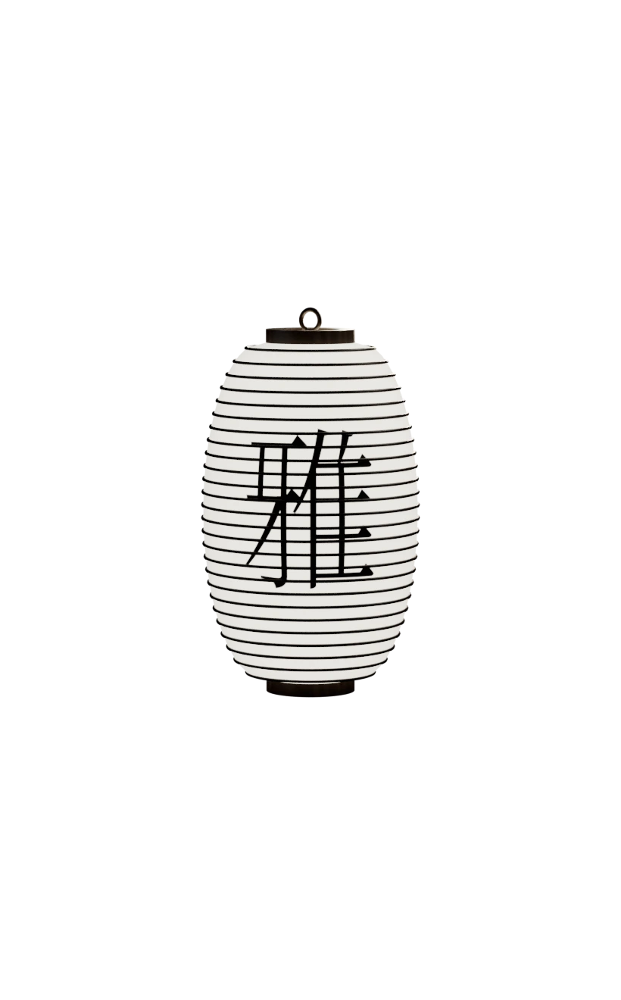
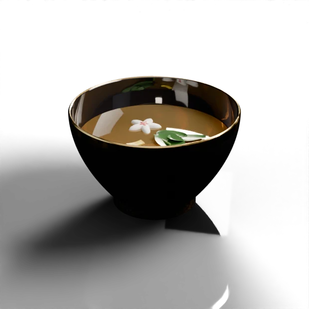
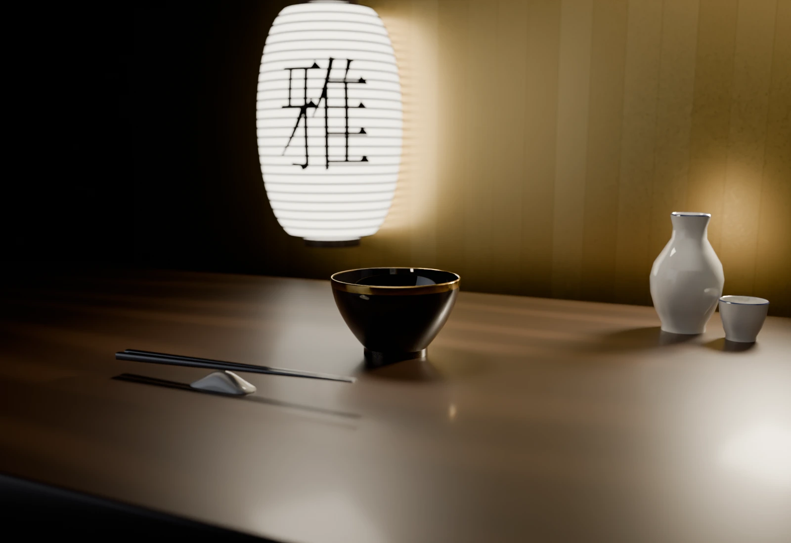

こころ
足すより、引く。
素材には、その季節にしか出ない匂いがあります。 初夏の鱧にも、秋の銀杏にも。 雅の仕事は、それを邪魔しないところで止めることです。
昆布と鰹でひいた一番出汁に、塩をひとつまみ。 味を決めるというより、素材の輪郭をなぞるように整えていきます。 献立はその日の仕入れで変わりますので、 お品書きは目安としてご覧ください。
店主 — 雅 三代目

器
器を、手に取る。
料理と同じだけ、器を選んでいます。 椀物にお出ししているのは、腰から金粉を蒔いた黒漆の一客。 蓋を取ったときに、汁の色がいちばん綺麗に見えるものを選びました。
ドラッグ、または左右キーで回してご覧いただけます。

黒漆金蒔絵 汁椀 — 口径 120mm

席
灯りの下で。
八席のカウンターと、四名様までの個室がひとつ。 カウンターは目の前が調理場ですので、 お出しするものの話を聞きながら召し上がっていただけます。
- 席数
- カウンター 8席 / 個室 1室（4名様まで）
- ご予約
- 前日までにお電話で。当日席は空き次第
- お子様
- 小学生以上、個室のみご案内しています
ご案内
お越しの前に
- 営業時間
- 17:00 – 23:00（料理 L.O. 22:00 / 飲物 L.O. 22:30）
- 定休日
- 日曜・第二月曜（祝日は営業しています）
- お支払い
- 現金・各種カード・電子マネー
- 住所
- 東京都港区西麻布 2-14-7 雅ビル 1F（地下鉄 六本木駅 2番出口より徒歩 7分）
- 電話
- 03-1234-5678（15:00 以降がつながりやすいです）